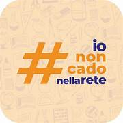
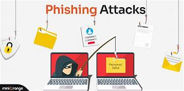
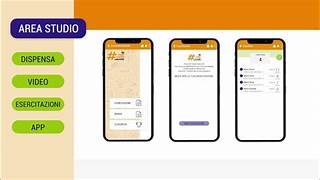

"Io non cado nella rete" è un progetto sulla conoscenza di Internet e sui pericoli nascosti nei Social Network, sul come riconoscerli e come proteggersi da essi. Questo percorso è destinato agli studenti degli Istituti superiori di tutta Italia e a quelli che frequentano l’ultimo anno della scuola secondaria di primo grado per promuovere la cittadinanza digitale e l'uso sicuro del web.
"Io non cado nella rete" nasce dalla consapevolezza dello sviluppo da parte dei ragazzi nel cercare di inseguire modelli irraggiungibili, costruendo un'identità digitale condizionata da like e apparenze.
"Io non cado nella rete" serve , di fatti, come strumento per educare gli studenti ed i docenti a comprendere come la rete influenzi emozioni, pensieri e comportamenti, fornendo strumenti più semplici per sviluppare senso critico e consapevolezza digitale. Allo stesso tempo, permette di riconoscere e difendersi dai pericoli dell'uso scorretto del web, come il furto d'identità, phishing, adescamento, dipendenza e altri rischi digitali.

Studio delle minacce del web: il phishing, riconoscere le fake news, l'importanza dell' impronta digitale, il cyberbullismo e l'importanza delle password sicure.

Analisi di casi reali e studio rivolto ad imparare a configurare per la privacy sui social network e riconoscimento di link ingannevoli.
Messa in pratica delle nostre conoscenze tramite l'uso di quiz e test riguardanti gli argomenti trattati nel progetto.
